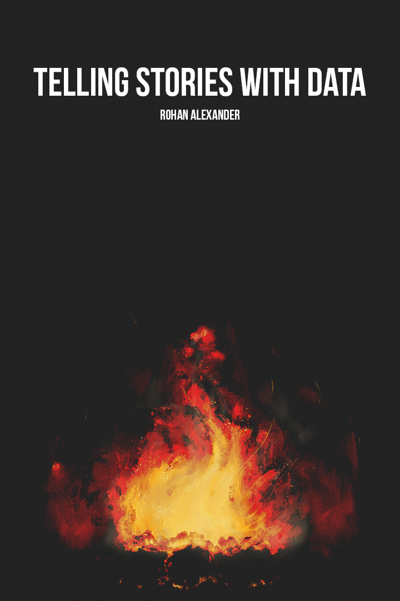

flowchart LR
p[[Plan]]
sim[[Simulate]]
a[[Acquire]]
e[[Explore / Analyze]]
s[[Share]]
p --> sim --> a --> e --> s
Introduction + Telling Stories with Data
SOCI 3040 – Quantitative Research Methods
Reading Assignment
- Required: Browse this site
- Recommended:
Lecture Slides
Class / Lab Notes
0.1 üëã Welcome to SOCI 3040!
My name is [John, Professor McLevey, Dr. McLevey] (he/him).
Professor & Head of Sociology
New to Memorial after 11 years at University of Waterloo
0.2 agenda.
- Who are you? Background? Expectations?
- What is this course about?
- What will we do? Where is everything?
1 Who are you?
1.1
Who are you?
Do you have any previous quant courses / experience?
What are your expectations for this course?
2 What is this course about?
2.1 3040 Calendar Description
SOCI 3040, Quantitative Research Methods, will familiarize students with the procedures for understanding and conducting quantitative social science research. It will introduce students to the quantitative research process, hypothesis development and testing, and the application of appropriate tools for analyzing quantitative data. All sections of this course count towards the HSS Quantitative Reasoning Requirement (see mun.ca/hss/qr). (PR: SOCI 1000 or the former SOCI 2000)
2.2 This Section (001)
This section of SOCI 3440 is an introduction to quantitative research methods, from planning an analysis to sharing the final results. Following the workflow from Rohan Alexander’s (2023) Telling Stories with Data, you will learn how to:
plan an analysis and sketch your data and endpoint
simulate some data to “force you into the details”
acquire, assess, and prepare empirical data for analysis
explore and analyze data by creating visualizations and fitting models
share the results of your work with the world!
2.3 This Section (001)
“A lack of clear communication sometimes reflects a failure by the researcher to understand what is going on, or even what they are doing.” (Alexander 2023)
Core foundation of quantitative research methods
Bridge between analysis and understanding
Essential skill for modern researchers
2.4 This Section (001)

You will use this workflow in the context of learning foundational quantitative research skills, including conducting exploratory data analyses and fitting, assessing, and interpreting linear and generalized linear models. Reproducibility and research ethics are considered throughout the workflow, and the entire course.
2.5 Common Concerns & Key Questions
- What is the dataset? Who generated it and why?
- What is the underlying process? What’s missing or has been poorly measured? Could other datasets have been generated, and if so, how different could they have been to the one that we have?
- What is the dataset trying to say? What else could it say?
- What do we want others to see? How do we convince them?
- Who is affected? Are they represented in the data? Have they been involved in the analysis?
3 Components of the Data Storytelling Workflow
3.1 Core Workflow Components
Plan, Simulate, Acquire, Explore / Analyze, Share
3.1.1 Plan and Sketch
deliberate, reasoned decisions
purposeful adjustments
even 10 minutes of planning is valuable
Planning and sketching an endpoint is the first crucial step in the workflow because it ensures we have a clear objective and direction for our analysis. By thoughtfully considering where we want to go, we stay focused and efficient, preventing aimless wandering and scope creep. Without a defined goal, any path will suffice, but we typically cannot afford to wander aimlessly. While our endpoint may change, having an initial objective allows for deliberate and reasoned adjustments. This planning doesn’t require extensive time—often just ten minutes with paper and pen can provide significant value.
3.2 Core Workflow Components
Plan, Simulate, Acquire, Explore / Analyze, Share
3.2.1 Simulate Data
Forces detailed thinking
Clarifies expected data structure and distributions.
Helps with cleaning and preparation
Identifies potential issues beforehand.
Provides clear testing framework
Ensures data meets expectations.
“Almost free” with modern computing
Provides “an intimate feeling for the situation” (Hamming [1997] 2020)
Simulating data is the second step, forcing us into the details of our analysis by focusing on expected data structures and distributions. By creating simulated data, we define clear features that our real dataset should satisfy, aiding in data cleaning and preparation. For example, simulating an age-group variable with specific categories allows us to test the real data for consistency. Simulation is also vital for validating statistical models; by applying models to data with known properties, we can ensure they perform as intended before using them on real data. Since simulation is inexpensive and quick with modern computing resources, it provides “an intimate feeling for the situation” and helps build confidence in our analytical tools.
3.3 Core Workflow Components
Plan, Simulate, Acquire, Explore / Analyze, Share
3.3.1 Acquire and Prepare
Often overlooked but crucial stage
Many difficult decisions required: data sources, formats, permissions.
Can significantly affect statistical results (Huntington-Klein et al. 2021)
Common challenges: quantity (too little or too much data) and quality
Acquiring and preparing the actual data is often an overlooked yet challenging stage of the workflow that requires many critical decisions. This phase can significantly affect statistical results, as the choices made determine the quality and usability of the data. Researchers may feel overwhelmed—either by having too little data, raising concerns about the feasibility of analysis, or by having too much data, making it difficult to manage and process. Careful consideration, thorough cleaning, and preparation at this stage are crucial for the success of subsequent analysis, ensuring that the data are suitable for the questions being asked.
3.4 Core Workflow Components
Plan, Simulate, Acquire, Explore / Analyze, Share
3.4.1 Explore and Understand
Begin with descriptive statistics
Move to statistical models
Remember: Models are tools, not truth, and they reflect our previous decisions, data acquisition choices, and cleaning procedures.
In the fourth step, we explore and understand the actual data by examining relationships within the dataset. This process typically starts with descriptive statistics and progresses to statistical modeling. It’s important to remember that statistical models are tools—not absolute truths—and they operate based on the instructions we provide. They help us understand the data more clearly but do not offer definitive results. At this stage, the models we develop are heavily influenced by prior decisions made during data acquisition and preparation. Sophisticated modelers understand that models are like the visible tip of an iceberg, reliant on the substantial groundwork laid in earlier stages. They recognize that modeling results are shaped by choices about data inclusion, measurement, and recording, reflecting broader aspects of the world even before data reach the workflow.
3.5 Core Workflow Components
Plan, Simulate, Acquire, Explore / Analyze, Share
4 Quantitative Research Essentials
4.1 Quantitative Research Essentials
Communication
Reproducibility
Ethics
Questions
Measurement
Data Collection
Data Cleaning
Exploratory Data Analysis
Modeling
Scaling

4.2 Communication (Most Important)
“Simple analysis, communicated well, is more valuable than complicated analysis communicated poorly.” (Alexander 2023)
“One challenge is that as you immerse yourself in the data, it can be difficult to remember what it was like when you first came to it.” (Alexander 2023)
- Write in plain language
- Use tables, graphs, and models effectively
- Focus on the audience’s perspective
4.3 Reproducibility
Everything must be independently repeatable.
Requirements:
Open access to code
Data availability or simulation
Automated testing
Clear documentation
Aim for autonomous end-to-end reproducibility
4.4 Ethics
“This means considering things like: who is in the dataset, who is missing, and why? To what extent will our story perpetuate the past? And is this something that ought to happen?” (Alexander 2023)
Consider the full context of the dataset (D’Ignazio and Klein 2020)
Acknowledge the social, cultural, and political forces (Crawford 2021)
Use data ethically with concern for impact and equity
4.5 Questions
Questions evolve through understanding
Challenge of operationalizing variables
Curiosity is essential, drives deeper exploration
Value of “hybrid” knowledge that combines multiple disciplines
Comfort with asking “dumb” questions
Curiosity is a key source of internal motivation that drives us to thoroughly explore a dataset and its associated processes. As we delve deeper, each question we pose tends to generate additional questions, leading to continual improvement and refinement of our understanding. This iterative questioning contrasts with the traditional Popperian approach of fixed hypothesis testing often taught quantitative methods courses in the sciences; instead, questions evolve continuously throughout the exploration. Finding an initial research question can be challenging, especially when attempting to operationalize it into measurable and available variables.
Strategies to overcome this include selecting an area of genuine interest, sketching broad claims that can be honed into specific questions, and combining insights from different fields. Developing comfort with the inherent messiness of real-world data allows us to ask new questions as the data evolve. Knowing a dataset in detail often reveals unexpected patterns or anomalies, which we can explore further with subject-matter experts. Becoming a “hybrid”—cultivating knowledge across various disciplines—and being comfortable with asking seemingly simple or “dumb” questions are particularly valuable in enhancing our understanding and fostering meaningful insights.
4.6 Measurement
“The world is so vibrant that it is difficult to reduce it to something that is possible to consistently measure and collect.” (Alexander 2023)
Measuring even simple things is challenging (e.g., measuring height: Shoes on or off? Time of day affects height. Different tools yield different results). More complex measurements are even harder. How do we measure happiness or pain?
Measurement requires decisions and is not value-free. Context and purpose guide all measurement choices.
Measurement and data collection involve the complex task of deciding how to translate the vibrant, multifaceted world into quantifiable data. This process is challenging because even seemingly simple measurements, like a person’s height, can vary based on factors like the time of day or the tools used (e.g., tape measure versus laser), making consistent comparison difficult and often unfeasible. The difficulty intensifies with more abstract concepts such as sadness or pain, where defining and measuring them consistently is even more problematic. This reduction of the world into data is not value-free; it requires critical decisions about what to measure, how to measure it, and what to ignore, all influenced by context and purpose. Like Picasso’s minimalist drawings that capture the essence of a dog but lack details necessary for specific assessments (e.g., determining if the dog is sick), we must deeply understand and respect what we’re measuring, carefully deciding which features are essential and which can be stripped away to serve our research objectives.
4.7 Data Collection & Cleaning
“Data never speak for themselves; they are the puppets of the ventriloquists that cleaned and prepared them.” (Alexander 2023)
Collection determines possibilities
What and how we measure matters.
Cleaning requires many decisions
E.g., Handling “prefer not to say” and open-text responses.
Document every step
To ensure transparency and reproducibility.
Consider implications of choices
E.g., ethics, representation.
Data cleaning and preparation is a critical and complex part of data analysis that requires careful attention and numerous decisions. Decisions such as whether to exclude “prefer not to say” responses (which would ignore certain participants) or how to categorize open-text entries (where merging them with other categories might disrespect respondents’ specific choices) have significant implications. There is no universally correct approach; choices depend on the context and purpose of the analysis. Therefore, it’s vital to meticulously record every step of the data cleaning process to ensure transparency and allow others to understand the decisions made. Ultimately, data do not speak for themselves; they reflect the interpretations and choices of those who prepare and analyze them.
5 EDA, Modeling, & Scaling
5.1 Exploratory Data Analysis (EDA)
Iterative process
Never truly complete
Shapes understanding
Exploratory Data Analysis (EDA) is an open-ended, iterative process that involves immersing ourselves in the data to understand its shape and structure before formal modeling begins. It includes producing summary statistics, creating graphs and tables, and sometimes even preliminary modeling. EDA requires a variety of skills and never truly finishes, as there’s always more to explore. Although it’s challenging to delineate where EDA ends and formal statistical modeling begins—since our beliefs and understanding evolve continuously—EDA is foundational in shaping the story we tell about our data. While not typically included explicitly in the final narrative, it’s crucial that all steps taken during EDA are recorded and shared.
5.2 Modeling
Tool for understanding
Not a recipe to follow
Just one representation of reality
Statistical significance \(\neq\) scientific significance
Statistical models help us explore the shape of the data; are like echolocation
Statistical modeling builds upon the insights gained from EDA and has a rich history spanning hundreds of years. Statistics is not merely a collection of dry theorems and proofs; it’s a way of exploring and understanding the world. A statistical model is not a rigid recipe to follow mechanically but a tool for making sense of data. Modeling is usually required to infer statistical patterns, formally known as statistical inference—the process of using data to infer the distribution that generated them. Importantly, statistical significance does not equate to scientific significance, and relying on arbitrary pass/fail tests is rarely appropriate. Instead, we should use statistical modeling as a form of echolocation, listening to what the models tell us about the shape of the world while recognizing that they offer just one representation of reality.
5.3 Scaling
Using programming languages like R and Python
Handle large datasets efficiently
Automate repetitive tasks
Share work widely and quickly
Outputs can reach many people easily
APIs can make analyses accessible in real-time
Scaling our work becomes feasible with the use of programming languages like R and Python, which allow us to handle vast amounts of data efficiently. Scaling refers to both inputs and outputs; it’s essentially as easy to analyze ten observations as it is to analyze a million. This capability enables us to quickly determine the extent to which our findings apply. Additionally, our outputs can be disseminated to a wide audience effortlessly—whether it’s one person or a hundred. By utilizing Application Programming Interfaces (APIs), our analyses and stories can be accessed thousands of times per second, greatly enhancing their impact and accessibility.
6 How Do Our Worlds Become Data?
6.1 How Do Our Worlds Become Data?
To a certain extent we are wasting our time. We have a perfect model of the world—it is the world! But it is too complicated. If we knew perfectly how everything was affected by the uncountable factors that influence it, then we could forecast perfectly a coin toss, a dice roll, and every other seemingly random process each time. But we cannot. Instead, we must simplify things to that which is plausibly measurable, and it is that which we define as data. Our data are a simplification of the messy, complex world from which they were derived.
There are different approximations of “plausibly measurable”. Hence, datasets are always the result of choices. We must decide whether they are nonetheless reasonable for the task at hand. We use statistical models to help us think deeply about, explore, and hopefully come to better understand, our data. (Alexander 2023)
6.2 How Do Our Worlds Become Data?
Through skillful
reduction ü뮂Äçüç≥
Just as a chef reduces a rich sauce to concentrate its essential flavors, we simplify reality into data—plausibly measurable approximations that capture the essence of the complex world. This reduction process involves deliberate choices about what aspects of reality to include, much like deciding which ingredients to emphasize in a culinary reduction. Our datasets, therefore, are distilled versions of reality, highlighting specific components while inevitably leaving out others.
As we employ statistical models to explore and understand these datasets, it’s crucial to recognize both what the data include and what they omit. Similar to how a reduction in cooking intensifies certain flavors while others may be lost or muted, the process of data simplification can inadvertently exclude important nuances or perspectives. Particularly in data science, where human-generated data are prevalent, we must consider who or what is systematically missing from our datasets. Some individuals or phenomena may not fit neatly into our chosen methods and might be oversimplified or excluded entirely. The abstraction and simplification inherent in turning the world into data require careful judgment—much like a chef monitoring a reduction to achieve the desired consistency without overcooking—to determine when simplification is appropriate and when it risks losing critical information.
Measurement itself presents significant challenges, and those deeply involved in the data collection process often have less trust in the data than those removed from it. Just as the process of reducing a sauce demands constant attention to prevent burning or altering the intended flavor, converting the world into data involves numerous decisions and potential errors—from selecting what to measure to deciding on the methods and accuracy required. Advances in instruments—from telescopes in astronomy to real-time internet data collection—have expanded our ability to gather data, much like new culinary techniques enhance a chef’s ability to create complex dishes. However, the world still imperfectly becomes data, and to truly learn from it, we must actively seek to understand the imperfections in our datasets and consider how our “reduction” process may have altered or omitted important aspects of reality.
7 Embracing the Challenge
7.1 Embracing the Challenge
“Ultimately, we are all just telling stories with data, but these stories are increasingly among the most important in the world.” (Alexander 2023)
Telling good stories with data is difficult but rewarding.
Develop resilience and intrinsic motivation.
Accept that failure is part of the process.
Consider possibilities and probabilities.
Learn to make trade-offs.
No perfect analysis exists.
Aim for transparency and continuous improvement.
7.2 Key Takeaways
- Data storytelling bridges analysis and understanding
- Effective communication is paramount
- Ethics and reproducibility are foundational
- Ask meaningful questions and measure thoughtfully and transparently
- Data collection and cleaning shape your analysis
- Embrace the iterative nature of exploration and modeling
- Leverage technology to scale and share your work
- Be mindful of the limitations of your data
8 What will we do? Where is everything?
8.1
Brightspace
Course materials website: johnmclevey.com/SOCI3040/
8.2 Next class
Before class: Complete the assigned reading
In class: Introduction to R and RStudio
References
Alexander, Rohan. 2023. Telling Stories with Data: With Applications in R. Chapman; Hall/CRC.
Crawford, Kate. 2021. Atlas of AI. 1st ed. New Haven: Yale University Press.
D’Ignazio, Catherine, and Lauren Klein. 2020. Data Feminism. Massachusetts: The MIT Press. https://data-feminism.mitpress.mit.edu.
Hamming, Richard. (1997) 2020. The Art of Doing Science and Engineering. 2nd ed. Stripe Press.
Huntington-Klein, Nick, Andreu Arenas, Emily Beam, Marco Bertoni, Jeffrey Bloem, Pralhad Burli, Naibin Chen, et al. 2021. “The Influence of Hidden Researcher Decisions in Applied Microeconomics.” Economic Inquiry 59: 944–60. https://doi.org/10.1111/ecin.12992.